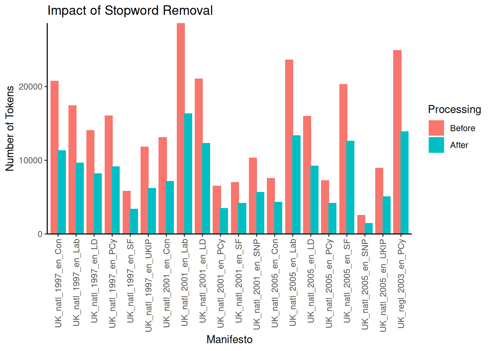
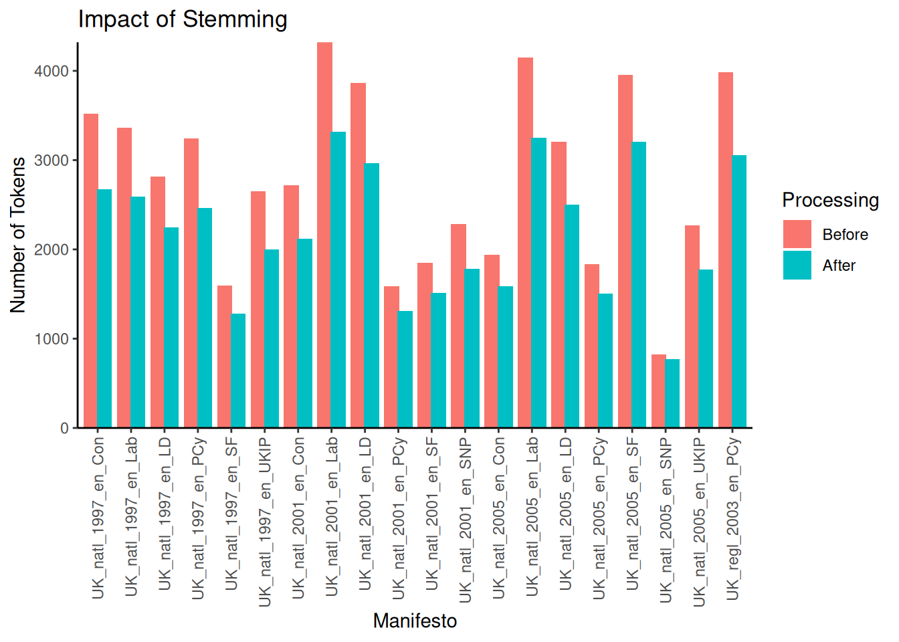
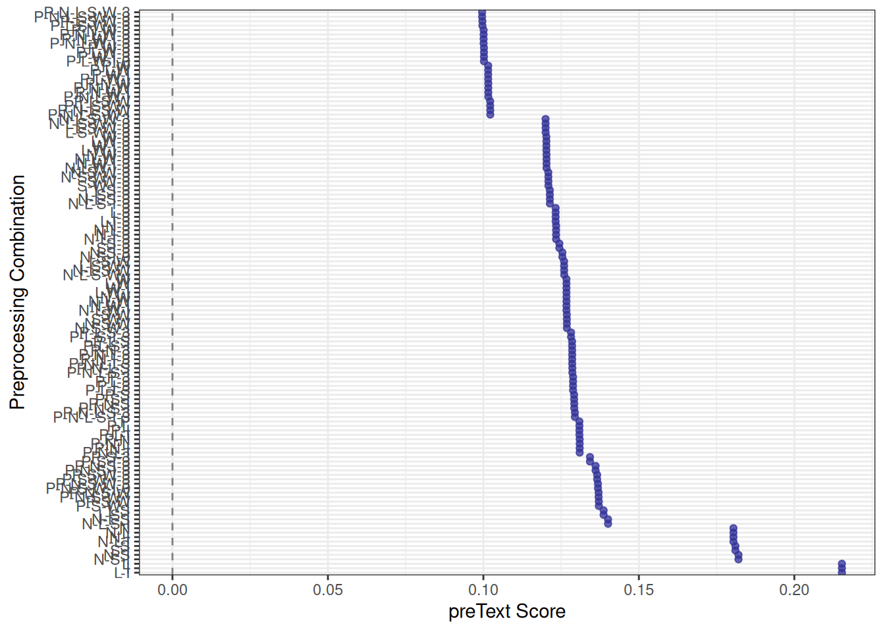
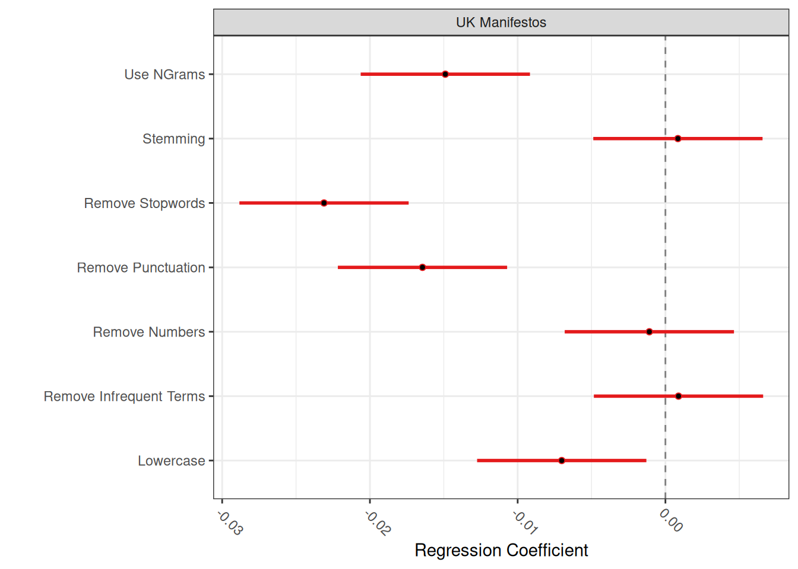

4.2 Text Pre-processing
Raw text data is inherently complex and often contains noise that can obscure patterns relevant to your research question. Text pre-processing is the cleaning and normalising of text to make it suitable for quantitative analysis. These steps transform the raw text into a structured format, such as a document-feature matrix, by reducing variability and focusing on meaningful units of text.
Choosing the proper pre-processing steps is not trivial and heavily depends on your research question and the nature of your text data. As highlighted by Denny & Spirling (2018), different pre-processing choices can significantly impact the results of downstream analyses, particularly unsupervised methods like topic modelling or clustering. Understanding what each pre-processing step does and its potential consequences is crucial. The preText R package, developed by the authors of that paper, provides tools to evaluate the sensitivity of your results to different pre-processing pipelines.
Pre-processing is typically applied sequentially to the text. In quanteda, most pre-processing steps operate on a tokens object, transforming each document’s list of word sequences before creating the final document-feature matrix.
4.2.1 Tokenisation and Initial Cleaning
The first step in pre-processing is tokenisation: splitting the continuous text into discrete units called tokens. These are usually individual words but can also be sentences, paragraphs, or characters. quanteda’s tokens() function is used for this and allows for initial cleaning during the tokenisation process. By default, tokens() splits on whitespace and keeps punctuation, symbols, and numbers:
## [1] "Manifesto" "May" "1997" "Contents" ":"
## [6] "*" "A" "New" "Opportunity" "for"
## [11] "Peace" "*" "Unionists" "*" "Economy"
## [16] "*" "Social" "Justice" "and" "Economic"The head(data_tokens[[5]], 20) argument here allows us to see the first \(20\) terms of the 5th object in our corpus (the 1997 Sinn Féin manifesto). As we can see, the raw tokens here include punctuation, numbers and symbols, as tokens() does not remove those unless we specify this:
data_tokens_cleaned <- tokens(
data_corpus_ukmanifestos,
what = "word",
# Specify that we want to tokenise into words
remove_punct = TRUE,
# Remove punctuation marks like ., !?
remove_symbols = TRUE,
# Remove symbols like $, %, ^, &, *
remove_numbers = TRUE,
# Remove numerical digits (e.g., 123, 1997)
remove_url = TRUE,
# Remove URLs (web addresses).
remove_separators = TRUE,
# Remove separator characters like tabs, newlines, and multiple spaces.
split_hyphens = FALSE,
# If false, words such as matter-of-fact will not be split
split_tags = FALSE,
# If false, do not split social media tags
include_docvars = TRUE,
concatenator = "_",
# The character to connect tokens that should stay together (e.g. we can write conservative_party to prevent it from being split)
verbose = quanteda_options("verbose")
)
# Display the first 20 tokens of the first document after initial cleaning to observe the removal of specified elements.
head(data_tokens_cleaned[[5]], 20)## [1] "Manifesto" "May" "Contents" "A" "New"
## [6] "Opportunity" "for" "Peace" "Unionists" "Economy"
## [11] "Social" "Justice" "and" "Economic" "Equality"
## [16] "Young" "People's" "Rights" "Education" "And"## UK_natl_1997_en_Con UK_natl_1997_en_Lab UK_natl_1997_en_LD
## 20796 17456 14080
## UK_natl_1997_en_PCy UK_natl_1997_en_SF UK_natl_1997_en_UKIP
## 16075 5857 11839
## UK_natl_2001_en_Con UK_natl_2001_en_Lab UK_natl_2001_en_LD
## 13142 28606 21101
## UK_natl_2001_en_PCy UK_natl_2001_en_SF UK_natl_2001_en_SNP
## 6542 7061 10383
## UK_natl_2005_en_Con UK_natl_2005_en_Lab UK_natl_2005_en_LD
## 7606 23651 16033
## UK_natl_2005_en_PCy UK_natl_2005_en_SF UK_natl_2005_en_SNP
## 7289 20335 2585
## UK_natl_2005_en_UKIP UK_regl_2003_en_PCy
## 8978 24971## UK_natl_1997_en_Con UK_natl_1997_en_Lab UK_natl_1997_en_LD
## 3043 2930 2756
## UK_natl_1997_en_PCy UK_natl_1997_en_SF UK_natl_1997_en_UKIP
## 3215 1741 2774
## UK_natl_2001_en_Con UK_natl_2001_en_Lab UK_natl_2001_en_LD
## 2746 4027 3852
## UK_natl_2001_en_PCy UK_natl_2001_en_SF UK_natl_2001_en_SNP
## 1639 2010 2366
## UK_natl_2005_en_Con UK_natl_2005_en_Lab UK_natl_2005_en_LD
## 2027 3903 3207
## UK_natl_2005_en_PCy UK_natl_2005_en_SF UK_natl_2005_en_SNP
## 1904 4256 1008
## UK_natl_2005_en_UKIP UK_regl_2003_en_PCy
## 2434 3937The remove_* arguments in tokens() are powerful for initial cleaning, simplifying the token set by removing elements that might not be relevant to your analysis and reducing noise. Also note that even though we remove punctuation, this is not always the case, such as when we are dealing with a possessive apostrophe (as in People’s). We could (if we wanted to) remove this as well, by adding tokens_remove(pattern = "'s$", valuetype = "regex"), though we do not recommend this as this would leave the s as a single character.
4.2.2 Lower-casing
Converting all text to lower-case is a standard normalisation step. It ensures that the same word is not counted as different features simply because of variations in capitalisation (e.g., “Party”, “party”, “PARTY”). This step is crucial for consistent term counting, and we generally recommend it unless your analysis requires preserving case information (e.g., for Named Entity Recognition). quanteda provides the tokens_tolower() function. Note that keep_acronyms=FALSE ensures that acronyms (like NATO) are also lower-cased. Set to TRUE if you want to preserve the capitalisation of detected acronyms:
data_tokens_lower <- tokens_tolower(data_tokens_cleaned, keep_acronyms = FALSE)
head(data_tokens_lower[[5]], 20)## [1] "manifesto" "may" "contents" "a" "new"
## [6] "opportunity" "for" "peace" "unionists" "economy"
## [11] "social" "justice" "and" "economic" "equality"
## [16] "young" "people's" "rights" "education" "and"## UK_natl_1997_en_Con UK_natl_1997_en_Lab UK_natl_1997_en_LD
## 20796 17456 14080
## UK_natl_1997_en_PCy UK_natl_1997_en_SF UK_natl_1997_en_UKIP
## 16075 5857 11839
## UK_natl_2001_en_Con UK_natl_2001_en_Lab UK_natl_2001_en_LD
## 13142 28606 21101
## UK_natl_2001_en_PCy UK_natl_2001_en_SF UK_natl_2001_en_SNP
## 6542 7061 10383
## UK_natl_2005_en_Con UK_natl_2005_en_Lab UK_natl_2005_en_LD
## 7606 23651 16033
## UK_natl_2005_en_PCy UK_natl_2005_en_SF UK_natl_2005_en_SNP
## 7289 20335 2585
## UK_natl_2005_en_UKIP UK_regl_2003_en_PCy
## 8978 24971## UK_natl_1997_en_Con UK_natl_1997_en_Lab UK_natl_1997_en_LD
## 3043 2930 2404
## UK_natl_1997_en_PCy UK_natl_1997_en_SF UK_natl_1997_en_UKIP
## 2906 1578 2581
## UK_natl_2001_en_Con UK_natl_2001_en_Lab UK_natl_2001_en_LD
## 2487 3554 3275
## UK_natl_2001_en_PCy UK_natl_2001_en_SF UK_natl_2001_en_SNP
## 1504 1789 2122
## UK_natl_2005_en_Con UK_natl_2005_en_Lab UK_natl_2005_en_LD
## 1857 3540 2845
## UK_natl_2005_en_PCy UK_natl_2005_en_SF UK_natl_2005_en_SNP
## 1710 3590 919
## UK_natl_2005_en_UKIP UK_regl_2003_en_PCy
## 2211 3492After lower-casing, all tokens are uniform and ready for subsequent matching and counting. Notice in the counts that while the number of tokens has not changed (as we have not removed any words), the number of types (unique tokens) has, as now words like “AND”, “And” and “and” are not considered as three different terms, but as a single one.
4.2.3 Stopword Removal
Stopwords are high-frequency words (e.g., “the”, “a”, “is”, “in”) that are generally considered less informative for distinguishing between documents or topics compared to more substantive terms (such as most verbs and nouns). Removing them can reduce the dimensionality of your DFM, allowing you to focus on more meaningful terms. However, stopwords should be eliminated with care, as in some contexts (e.g., authorship attribution, linguistic style analysis), they can be highly informative. Also, domain-specific “stopwords” might be essential concepts in your field and should not be removed (for example, you might not want to remove the word “we” if this word has become important during a political campaign).
quanteda includes built-in lists of stopwords for many languages, accessed via the stopwords() function. You can remove these or your custom lists using tokens_select():
data_tokens_nostop <- tokens_select(data_tokens_lower, stopwords("english"), selection = "remove")
head(data_tokens_nostop[[5]], 20)## [1] "manifesto" "may" "contents" "new" "opportunity"
## [6] "peace" "unionists" "economy" "social" "justice"
## [11] "economic" "equality" "young" "people's" "rights"
## [16] "education" "training" "farming" "rural" "development"## UK_natl_1997_en_Con UK_natl_1997_en_Lab UK_natl_1997_en_LD
## 11358 9671 8227
## UK_natl_1997_en_PCy UK_natl_1997_en_SF UK_natl_1997_en_UKIP
## 9185 3402 6239
## UK_natl_2001_en_Con UK_natl_2001_en_Lab UK_natl_2001_en_LD
## 7179 16386 12338
## UK_natl_2001_en_PCy UK_natl_2001_en_SF UK_natl_2001_en_SNP
## 3508 4212 5692
## UK_natl_2005_en_Con UK_natl_2005_en_Lab UK_natl_2005_en_LD
## 4349 13366 9263
## UK_natl_2005_en_PCy UK_natl_2005_en_SF UK_natl_2005_en_SNP
## 4203 12624 1508
## UK_natl_2005_en_UKIP UK_regl_2003_en_PCy
## 5107 13955## UK_natl_1997_en_Con UK_natl_1997_en_Lab UK_natl_1997_en_LD
## 2934 2827 2306
## UK_natl_1997_en_PCy UK_natl_1997_en_SF UK_natl_1997_en_UKIP
## 2801 1486 2472
## UK_natl_2001_en_Con UK_natl_2001_en_Lab UK_natl_2001_en_LD
## 2372 3444 3174
## UK_natl_2001_en_PCy UK_natl_2001_en_SF UK_natl_2001_en_SNP
## 1409 1694 2021
## UK_natl_2005_en_Con UK_natl_2005_en_Lab UK_natl_2005_en_LD
## 1742 3426 2714
## UK_natl_2005_en_PCy UK_natl_2005_en_SF UK_natl_2005_en_SNP
## 1612 3485 824
## UK_natl_2005_en_UKIP UK_regl_2003_en_PCy
## 2107 3386Note that this has removed several words, such as ‘and’ and ‘a’. Before we move on, let us visualise the impact of this stopword removal on the total number of tokens per document. This helps us to better understand the reduction in text volume:
# Calculate the number of tokens for each document before and after stopword removal.
tokens_before_stop <- ntoken(data_tokens_lower)
tokens_after_stop <- ntoken(data_tokens_nostop)
# Create a data frame for plotting the impact.
stopwords_data <- data.frame(
Manifesto = docnames(data_tokens_lower),
# Get document names
Before = tokens_before_stop,
After = tokens_after_stop
)
# Reshape the data from wide to long format for ggplot2 for more straightforward plotting of grouped bars
stopwords_data <- melt(
stopwords_data,
id.vars = "Manifesto",
variable.name = "Processing",
value.name = "NumTokens"
)
ggplot(stopwords_data,
aes(x = Manifesto, y = NumTokens, fill = Processing)) +
geom_bar(stat = "identity", position = position_dodge(width = 0.8)) +
scale_x_discrete(name = "Manifesto") +
scale_y_continuous(name = "Number of Tokens", expand = c(0, 0)) +
ggtitle("Impact of Stopword Removal") +
theme_classic() +
theme(axis.text.x = element_text(
angle = 90,
vjust = 0.5,
hjust = 1
))
As expected, removing stopwords substantially reduces the total number of tokens across all documents. The number of words removed differs per document but can be substantial, for example, in the case of the 2001 Labour Party manifesto, which was reduced from \(28,606\) to \(16,386\) words — a reduction of around \(42\%\). Finally, remember that stopwords("english") is nothing more than a character vector of stop words. Therefore, if we wish to remove stop words ourselves, we can do so by simply providing them as such:
4.2.4 N-grams and Collocations
While individual words (unigrams) are the most common features in text analysis, sometimes the meaning is better captured by sequences of words, known as n-grams. An n-gram is a contiguous sequence of n items from a given sample of text or speech. For example, “strong economy” is a 2-gram (or bigram), and “peace and prosperity” is a 3-gram (or trigram). Using n-grams can help us to capture phrases, multi-word expressions, and local context that single words miss. The quanteda package provides tokens_ngrams() to generate all possible n-grams of a specified size from a tokens object. Here, # n = 2 specifies bigrams:
## [1] "contents_opportunity" "opportunity_peace" "peace_unionists"
## [4] "unionists_economy" "economy_social" "social_justice"
## [7] "justice_economic" "economic_equality" "equality_young"
## [10] "young_people's"While tokens_ngrams() can generate n-grams, the problem is that it creates all possible numbers of n-grams, many of which are not meaningful or useful (such as ‘opportunity_peace’). Therefore, it is a better idea first to identify collocations – n-grams that appear more frequently than we would expect by chance. These often represent meaningful phrases or concepts (for example, given that we are working with UK manifestos, we would expect combinations such as “Prime Minister” or “National Health Service”). We can identify these with the textstat_collocations() function, which calculates various association measures (like likelihood ratio, PMI, and chi-squared) to score potential collocations. Depending on your analysis, you might calculate collocations before stopword removal if you think that stopwords could be part of a collocation you would like to capture (for instance, if you are interested in capturing the term “we the people”). For this example, we will look for collocations after the stopwords are removed. Here, # min_count specifies the minimum number of times a collocation must appear to be considered. The standard (\(2\)) thus means that a combination appears more than a single time, and is thus not a random combination. Here we set ours at \(5\):
Now that we have found all the possible collocations, it is time to decide which ones we want to use. One aspect we can utilise for this is the Wald \(z\)-statistic, which calculates the likelihood that the two words would occur together at random. Here, we decide to include only those collocations with a \(z>3\), which means they are three standard errors away from the mean (and thus have a p-value of approximately \(0.0027\)) of being likely:
## collocation count count_nested length lambda z
## 1 local authorities 145 0 2 6.227087 39.79911
## 2 young people 143 0 2 5.516777 39.77435
## 3 european union 114 0 2 7.258521 39.45265
## 4 health service 92 0 2 5.002104 37.77858
## 5 public services 105 0 2 4.125346 35.71296
## 6 long term 60 0 2 7.560533 35.69555
## 7 income tax 77 0 2 5.246884 35.28413
## 8 party wales 88 0 2 4.497066 34.41696
## 9 small businesses 52 0 2 6.810025 34.11001
## 10 public transport 77 0 2 4.700041 33.27666
## 11 council tax 68 0 2 5.103959 33.10773
## 12 private sector 51 0 2 5.603853 31.87116
## 13 cymru party 55 0 2 5.169383 31.42865
## 14 labour party 69 0 2 4.471125 31.34627
## 15 human rights 85 0 2 7.954503 30.72153
## 16 per year 58 0 2 4.732218 30.50192
## 17 rural areas 52 0 2 5.087455 30.47553
## 18 conservative government 74 0 2 4.876933 30.34761
## 19 next parliament 49 0 2 5.395004 30.31724
## 20 waiting times 39 0 2 8.122568 30.24217As we can see, we now capture some relevant combinations such as “european union”, “local authorities”, and “income tax”. We could remove all the terms we do not wish to from the data frame, but we will leave this for now. For now, we will “compound” them using tokens_compound(). This function replaces the sequence of individual tokens that form a collocation with a single, multi-word token (e.g., “national_health_service”). This ensures that the identified phrase is treated as a single feature from now on (as both the tokens object and the DFM will see _ as the sign for a compound):
data_tokens_compounded <- tokens_compound(data_tokens_nostop, pattern = collocations,
concatenator = "_")
head(data_tokens_compounded[[5]], 10)## [1] "contents" "opportunity" "peace" "unionists"
## [5] "economy" "social_justice" "economic" "equality"
## [9] "young_people's" "rights"Note that now the words “social justice” are combined into a single new term. Also, note that while we mainly calculate the collocations after initial lowercasing and punctuation removal, whether we do so before or after stopword removal and stemming depends on whether we see the stopwords and word endings as part of the collocation. For instance, stemming “social security” to “social secur” might be desired, but stemming before identifying the collocation could make it harder for us to identify the collocation.
4.2.5 Stemming and Lemmatisation
Stemming and lemmatisation are two techniques that reduce words to a common form, to group variations (e.g., “run”, “running”, “ran”). This can help us to treat words with similar meanings as equivalent features, reducing the overall vocabulary size and improving the signal-to-noise ratio in the data.
Stemming uses algorithmic rules to chop off suffixes (and sometimes prefixes) from words, often resulting in a truncated “stem” that may not be a real word (e.g., “university” -> “univers”, “connection” -> “connect”). quanteda provides the tokens_wordstem() function, which uses the Porter stemmer by default for English. While fast, stemming can sometimes produce non-words or conflate words with different meanings.
Lemmatisation is a more linguistically informed process that uses a lexicon (a dictionary of words and their base forms) to convert words to their dictionary form, or lemma (e.g., “better” -> “good”, “geese” -> “goose”, “running” -> “run”). Lemmatisation generally produces valid words. It can be more accurate than stemming but typically requires external resources, such as lexicons. Also, it is computationally more intensive. quanteda does not have a built-in lemmatiser. Still, you can perform lemmatisation before creating a corpus or tokens object using other R packages (like textstem or spacyr).
Here, we will do some stemming using tokens_wordstem():
data_tokens_stemmed <- tokens_wordstem(data_tokens_compounded, language = "english")
head(data_tokens_stemmed[[5]], 20)## [1] "content" "opportun" "peac"
## [4] "unionist" "economi" "social_justic"
## [7] "econom" "equal" "young_peopl"
## [10] "right" "education_train" "farming_rural_develop"
## [13] "environ" "cultur" "women"
## [16] "irish_political_prison" "polic" "futur"
## [19] "opportun" "peac"Note how words like “economy”, “culture”, and “peace” have been reduced to their stems (“economi”, “cultur”, “peac”). As before, let’s visualise this as well:
# Calculate the number of types (unique tokens)
types_before_stem <- ntype(data_tokens_compounded)
types_after_stem <- ntype(data_tokens_stemmed)
stemming_data <- data.frame(
document = docnames(data_tokens_nostop),
# Get document names
Before = types_before_stem,
After = types_after_stem
)
stemming_data <- melt(
stemming_data,
id.vars = "document",
variable.name = "Processing",
value.name = "NumTypes"
)
# Create a bar plot comparing each document's type counts before and after stemming
ggplot(stemming_data, aes(x = document, y = NumTypes, fill = Processing)) +
geom_bar(stat = "identity", position = position_dodge(width = 0.8)) + # Use dodged bars.
scale_x_discrete(name = "Manifesto") +
scale_y_continuous(name = "Number of Tokens", expand = c(0, 0)) +
ggtitle("Impact of Stemming") +
theme_classic() +
theme(axis.text.x = element_text(
angle = 90,
vjust = 0.5,
hjust = 1
)) # Rotate x-axis labels
Again, removing the words from their stems can remove a significant number of unique features. For example, looking at the 2001 Labour manifesto shows that from the \(4320\) types before stemming, only \(3315\) remained afterwards.
4.2.6 Removing Sparse Features (DFM Trimming)
After tokenisation and linguistic pre-processing, we can generate our DFM. However, at this point, our DFM might still contain many features (terms) that appear infrequently across the corpus or in only a few documents. These sparse features can increase the dimensionality of our data without adding much useful information and can sometimes be noise (e.g., typos). Removing them can decrease processing time and also the performance of some models. We can use the dfm_trim() function for DFM trimming. We can set thresholds based on minimum term frequency (min_termfreq), maximum term frequency (max_termfreq), minimum document frequency (min_docfreq), or maximum document frequency (max_docfreq), either as absolute counts or percentages:
data_dfm_untrimmed <- dfm(data_tokens_stemmed)
data_dfm_trimmed <- dfm_trim(data_dfm_untrimmed, min_docfreq = 2) # Trim the dfm to remove features that appear in fewer than two documents
# You could also trim by minimum term frequency (total occurrences across the
# corpus): data_dfm_trimmed_freq <- dfm_trim(data_dfm_untrimmed, min_termfreq =
# 10)
data_dfm_untrimmed## Document-feature matrix of: 20 documents, 11,789 features (81.37% sparse) and 6 docvars.
## features
## docs conserv foreword administr elect sinc among success
## UK_natl_1997_en_Con 19 1 3 7 28 3 29
## UK_natl_1997_en_Lab 43 0 8 15 4 7 19
## UK_natl_1997_en_LD 2 0 2 12 0 0 4
## UK_natl_1997_en_PCy 1 1 2 6 0 5 8
## UK_natl_1997_en_SF 0 0 2 6 5 1 3
## UK_natl_1997_en_UKIP 3 0 4 8 6 1 6
## features
## docs british peacetim histori
## UK_natl_1997_en_Con 32 1 8
## UK_natl_1997_en_Lab 19 2 7
## UK_natl_1997_en_LD 6 0 0
## UK_natl_1997_en_PCy 7 0 3
## UK_natl_1997_en_SF 9 0 2
## UK_natl_1997_en_UKIP 2 0 3
## [ reached max_ndoc ... 14 more documents, reached max_nfeat ... 11,779 more features ]## Document-feature matrix of: 20 documents, 6,257 features (69.33% sparse) and 6 docvars.
## features
## docs conserv foreword administr elect sinc among success
## UK_natl_1997_en_Con 19 1 3 7 28 3 29
## UK_natl_1997_en_Lab 43 0 8 15 4 7 19
## UK_natl_1997_en_LD 2 0 2 12 0 0 4
## UK_natl_1997_en_PCy 1 1 2 6 0 5 8
## UK_natl_1997_en_SF 0 0 2 6 5 1 3
## UK_natl_1997_en_UKIP 3 0 4 8 6 1 6
## features
## docs british peacetim histori
## UK_natl_1997_en_Con 32 1 8
## UK_natl_1997_en_Lab 19 2 7
## UK_natl_1997_en_LD 6 0 0
## UK_natl_1997_en_PCy 7 0 3
## UK_natl_1997_en_SF 9 0 2
## UK_natl_1997_en_UKIP 2 0 3
## [ reached max_ndoc ... 14 more documents, reached max_nfeat ... 6,247 more features ]Note that when we trim the DFM to remove features that appear in fewer than five documents, we reduce the sparsity (i.e., empty cells in the DFM) from \(81.37\%\) to \(69.33\%\). We also go from \(11,789\) for features (types) to \(6,257\). Trimming significantly reduces the number of features in the DFM by removing those that occur very rarely. The specific thresholds you choose for trimming will depend on the size of your corpus, the nature of your text, and your analytical goals. One reason to use it (and why we set it to \(2\) here) is that ‘unique’ words are rarely very interesting. Besides, removing words that occur only a single time can be a good way of removing spelling mistakes. However, be mindful that overly aggressive trimming can remove potentially informative rare terms.
4.2.7 Additional Pre-Processing
Besides using the functions built into quanteda, we can also use R’s more native functions to clean texts. For this, we have to clean our text while it is still in a data frame. There are several ways to do this, including R’s gsub. However, we will use the more powerful and faster stringr package, part of the tidyverse, here. To use stringr, we first need to load the library. We must also ensure that our texts are stored as a data frame. For demonstration purposes here, we will take our original (and non-pre-processed) corpus and make it into a data frame using the convert function:
Now we can use stringr functions like str_replace_all() to clean up the text. str_replace_all() takes a character vector, a pattern to find and a replacement string. We will use regular expressions for the pattern.
# Remove URLs (http, https, ftp, ftps)
data_corpus_df$text <- str_replace_all(data_corpus_df$text, "http[s]?://[^ ]+", "")
data_corpus_df$text <- str_replace_all(data_corpus_df$text, "ftp[s]?://[^ ]+", "") # Also include ftp/s
# Remove mentions (@username)
data_corpus_df$text <- str_replace_all(data_corpus_df$text, "@\\w+", "")
# Remove hashtags (#topic) - keep the topic word, remove the #
data_corpus_df$text <- str_replace_all(data_corpus_df$text, "#(\\w+)", "\\1")
# Remove punctuation
data_corpus_df$text <- str_replace_all(data_corpus_df$text, "[[:punct:]]", "")
# Remove numbers (optional, depending on analysis)
data_corpus_df$text <- str_replace_all(data_corpus_df$text, "[[:digit:]]", "")
# Remove retweet indicator 'RT' (ensure it's at the start of a potential tweet)
data_corpus_df$text <- str_replace_all(data_corpus_df$text, "^RT\\s", "") # Use ^RT\\s to match RT at the start followed by space
# Remove extra whitespace (leading, trailing, and multiple spaces)
data_corpus_df$text <- str_trim(data_corpus_df$text) # Remove leading/trailing whitespace using str_trim
data_corpus_df$text <- str_replace_all(data_corpus_df$text, "[[:space:]]{2,}", " ") # Replace multiple spaces with a single space
# Convert to lower-case (important for dictionary matching)
data_corpus_df$text <- str_to_lower(data_corpus_df$text)Note that in most cases, the functions in quanteda are enough. However, str_replace_all() can be practical before regular pre-processing, especially when dealing with problematic data.
4.2.8 Evaluating Pre-Processing
The selection and order of these pre-processing steps can substantially impact the resulting DFM and, as a result, the outcomes of your text analysis. For example:
- Removing stopwords might remove terms that are crucial in a specific context or field
- Stemming can group words that have different meanings (e.g., “organ” and “organise”)
- The order of removing stopwords before or after calculating collocations affects the collocations we find
In other words, simply pre-processing our data can lead to different data sets and, therefore, to different conclusions later on during our analysis. To see what effect our pre-processing decisions had, we can use the preText package by Denny & Spirling (2018) to see what the impact of each step is on our analysis. preText works by applying all of the different possible combinations of pre-processing steps (7 in total, leading to 2⁷ = 128 possible combinations) to your corpus and then comparing the similarities between the different DFMs.
First, ensure the preText package is installed and loaded:
First, we run factorial_preprocessing(), which takes a corpus object (or other text formats) and applies a set of default pre-processing pipelines by systematically varying common pre-processing options. After this, we run the main preText command:
# use_ngrams = TRUE: Also consider including n-grams (sequences of words)
# infrequent_term_threshold = 0.01: Remove terms that appear in less than 1% of
# documents
preprocessed_documents <- factorial_preprocessing(data_corpus_ukmanifestos, use_ngrams = TRUE,
infrequent_term_threshold = 0.01, parallel = FALSE, cores = 1, return_results = TRUE,
verbose = TRUE # Display progress and information
)
# Run the preText analysis, which compares the different pre-processed versions
# distance_method = 'cosine': Method to calculate distance between document
# representations num_comparisons = 50: Number of random document pairs to
# compare for robustness
preText_results <- preText(preprocessed_documents, dataset_name = "UK Manifestos",
distance_method = "cosine", num_comparisons = 50, verbose = TRUE)After running preText, we can visualise the results. Two commands are already part of the package and provide a good overview of the results:


In the first plot, lower scores indicate more robust pre-processing pipelines where document similarities are less sensitive to changes. In the second plot, which is the more interesting of the two, we are looking for pre-processing steps that are significantly different from the null line. In this case, this is the use of n-grams, the removal of stopwords and punctuation and lowercasing. The fact that they are different means that this pre-processing step has led to a significantly different DFM, which is, therefore, more likely to yield significantly different results in further analyses. Note that this does not say whether this is good or bad: we might still prefer a “different” and clean DFM over an uncleaned one. The point is that we are aware of these changes and should consider the potential impacts of our pre-processing on our subsequent analysis.